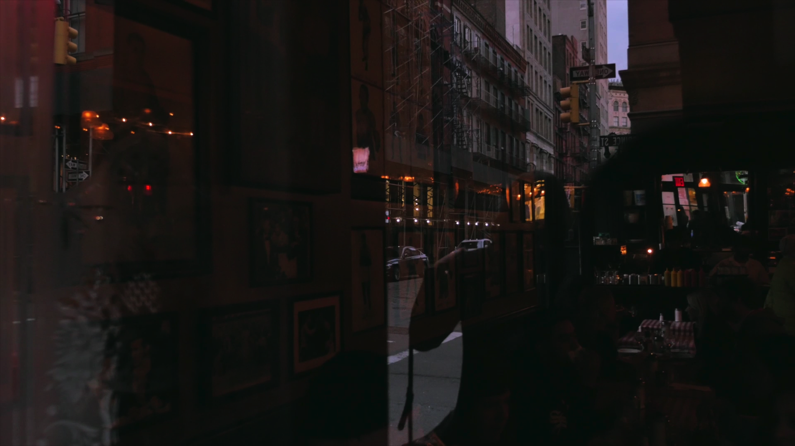
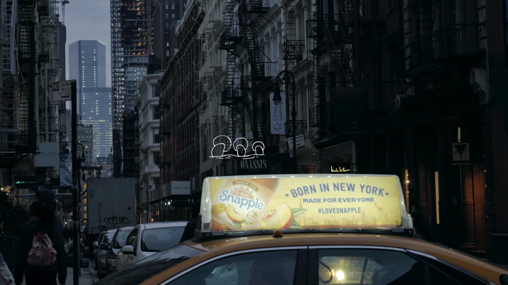
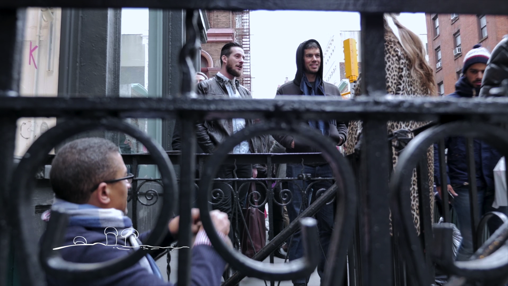
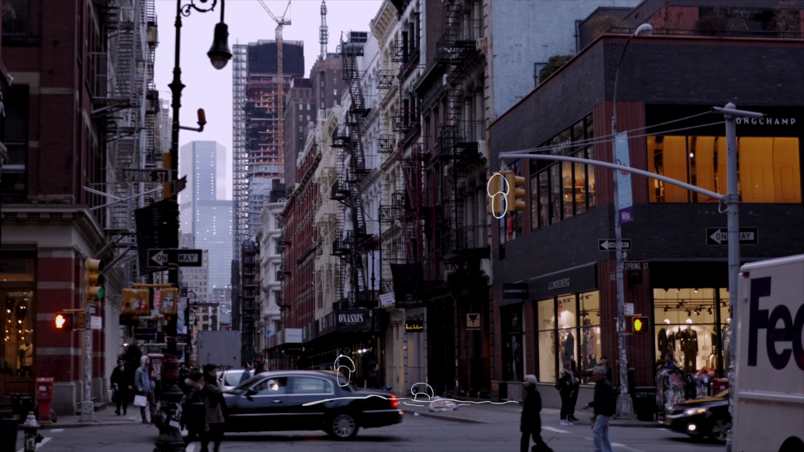
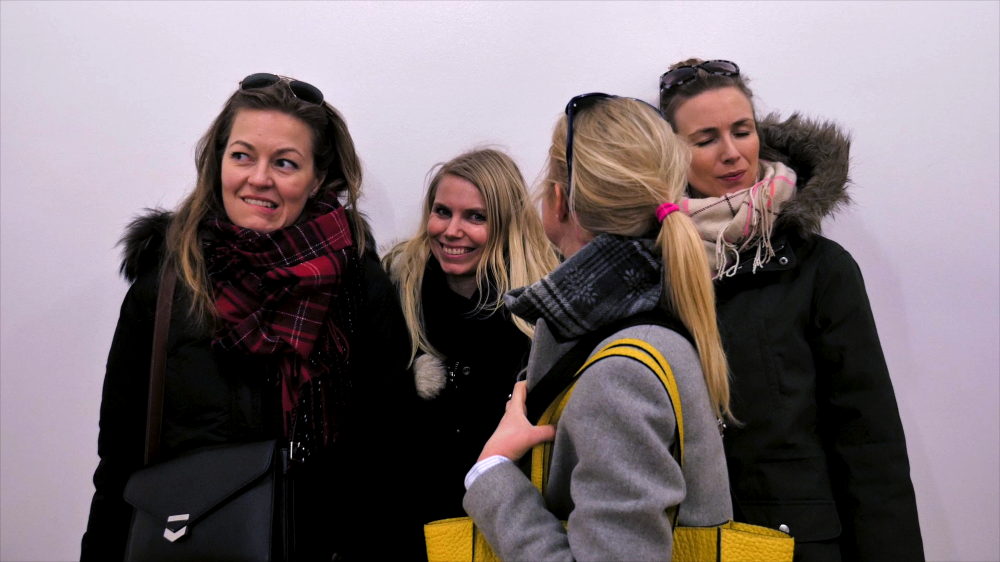
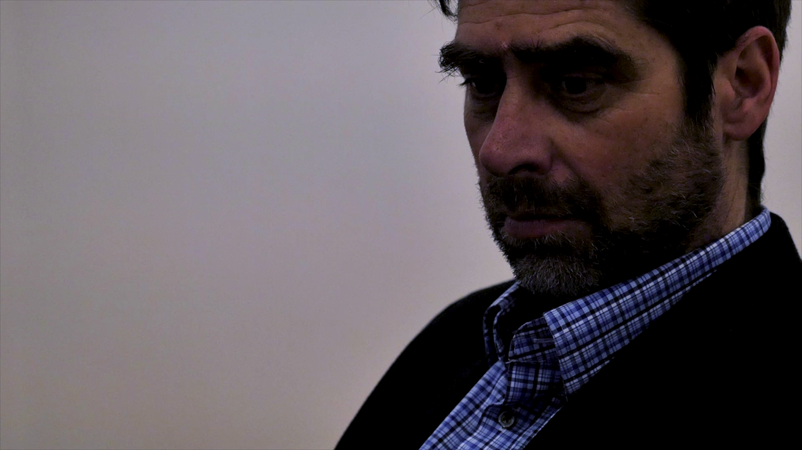
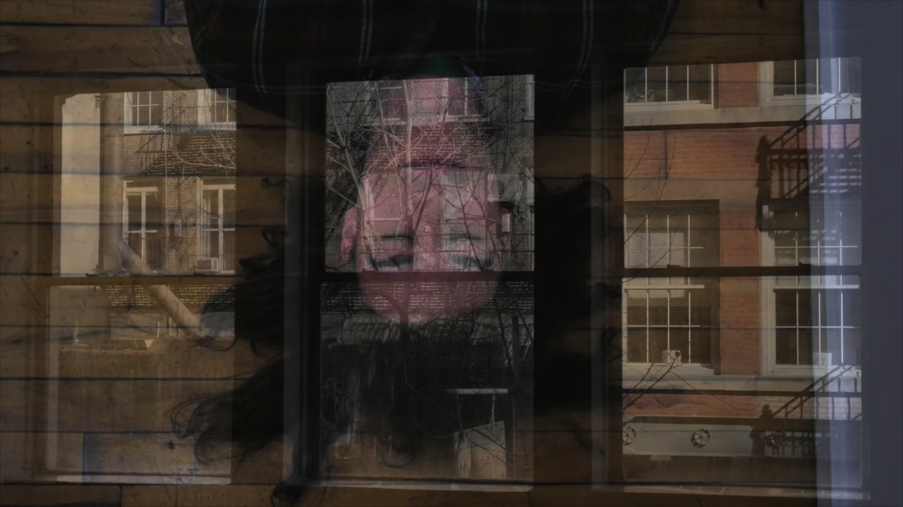
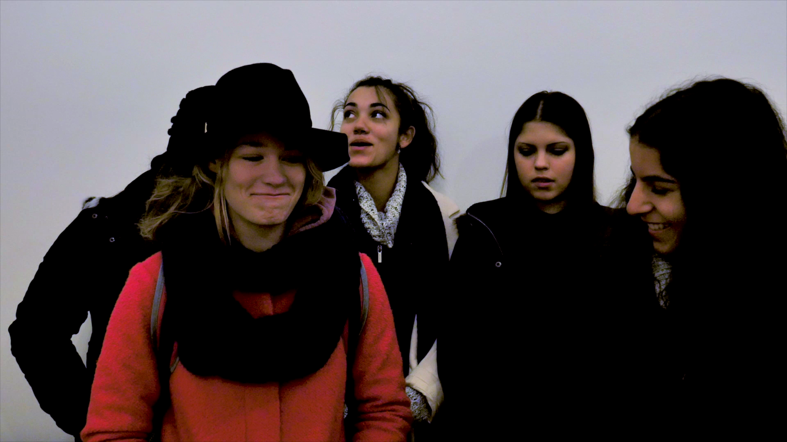

White Mushroom, Black Earth
White Mushroom, Black Earth (10'31', hybrid documentary, 2015) whimsically created a paralleled narrative using Walter de Maria's permanent landscape installation The New York Earth Room as a canvas. The Earth Room does not allow photography; therefore, the documentation focused on its visitors. Individuals and groups were invited to reflect on their experience with the Earth Room, then perform it in front of the white wall of the visitor office non-verbally.
The roomful of dirt stubbornly occupies a second floor gallery in the center of New York SoHo. The rent of SoHo spaces has skyrocketed in the past few decades, yet since the 80s, this huge volume of ungrounded earth has generated nothing profitable as a permanent tenant. The story of a fictional character Nate -- a self-claimed first generation New Yorker who was born and raised in Pittsburg -- was told in parallel through the voice of an uncharacterized narrator "I". A third character, William Dilworth, the Earth Room keeper in real life since 1980s, appeared in this film as himself eating a plate of salad with imaginary mushroom picked out from the earth. In an old New York Times interview, he described how he would routinely plough through the earth and pick out anything that grew out of it that could potentially distract audience attention, including mushrooms.
The film situates the fictional human characters within the larger socio historical context of the New York Earth Room, commenting on the recent development of SoHo and ongoing gentrifications in New York City.
"She walked into the Earth Room only to have her plan for filming thwarted by the wish of the artist, to ban photography. Yet she reacted to the circumstances with imagination and grace. The film amplified visitors' personal experience in a respectful, simple, insightful, and mysterious way. I found the film enchanting." — William Dilworth, The Earth Room Keeper
Selected Screening
- 2018 Blow-Up International Arthouse Film Festival, Official Selection, Chicago, IL
- 2017 NYC Independent Film Festival, Official Selection, New York, NY
- 2017 Chinese American Film Festival, Official Selection, Multiple Locations in California
- 2017 IAFOR Documentary Film Awards, Finalist, Kobe, Japan
- 2017 Cape May Film Festival Special Program, Cape May, NJ
- 2017 Newtown Theater, New Town, PA
- 2016 Katra Film Series, Official Selection, New York, NY
- 2016 Roxy Theater, Philadelphia, PA
- 2016 Ambler Theater, Ambler, PA
- 2016 Bideodromo Festival, Official Selection, Bilbao, Spain
{kind=link}

{kind=link}

{kind=link}

{kind=link}

{kind=link}

{kind=link}

{kind=link}

{kind=link}
